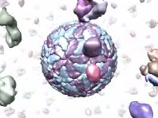
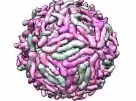
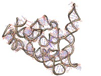
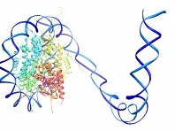

The play command performs complex motions for creating animations. The operation can be:
|  |
| Example animation |
Operation keywords and their sub-keywords described below can be truncated to unique strings, and their case does not matter. Synonyms for true: True, 1. Synonyms for false: False, 0. A vertical bar "|" designates mutually exclusive options, and default settings are indicated with bold.
• play radial surfaces [ [factor] f ] [ [frames] N ]Move Multiscale Models chain surfaces radially from their collective center. The center of each chain surface is moved radially from the collective center to a final distance of f times the starting distance (default is expansion by a factor of 2.0) over N frames (default 25). Both keywords can be omitted, although if the factor keyword is used, the frames keyword should also be used if N is specified. This command was developed to peel off outer layers of proteins from virus capsid models. Examples of surface specifiers: #0, #1:1-30, #2:.A,.C, #3:.A-H, #4:31-60.S-V• play wave model1 model2 distanceStep [ [frames] N ] [ pairChains p ] [ groupChains g ] [ equivalentChains s ] [ pairingMethod match | push | pull | pushpull ]
|  |
| Example animation |
Move Multiscale Models chain surfaces from an initial position (model1) to a final position (as in model2) over N frames (default 25). The model1 surfaces are moved. The motion begins with the chains with loaded atoms and propagates outward in layers, where a layer consists of chains within distanceStep of chains in the previous layer. Chains in the initial state can be paired with “destination” chains in the final state in a way that minimizes the overall motion. This command was developed for showing the conformational rearrangement of dengue virus capsid proteins during virus maturation.• play wiggle atom-spec branches b [ [frames] N ] [ angle a ] [ speed s ]Paired chains must contain identical sets of atoms because the motion is computed by minimum-RMSD match between corresponding atom positions. By default, pairing is by matching chain identifiers. Alternatively, the pairChains option can be used to specify pairing directly. For example, “pairChains A=S,B=T,C=U” identifies chains A,B,C in the initial state as matching chains S,T,U (respectively) in the final state. The groupChains option allows moving multiple chains as a single rigid object; for example, “groupChains A+D,B+E,C+F” makes chains A and D move as a single unit, likewise for B and E, and C and F. The equivalentChains option lists chains (or groups) in the initial state that are equivalent to each other for purposes of pairing initial state and final state chains. For example, “equivalentChains A=B=C” indicates that chains A, B, and C are all interchangeable when pairing with final state chains. If A+D,B+C,C+F are grouped, “equivalentChains A+D=B+E=C+F” can be used to indicate that the three groups are equivalent for pairing purposes.
Multiscale Models typically generates multiple symmetry-related copies of individual chains. The copies of a given chain cannot be distinguished by chain ID, so for these, a pairingMethod is applied:
- match (default) - matches chain instance numbers, e.g., chains 1-60 match 1-60, in order
- push - within a layer, matches each initial state chain to the nearest unpaired final state chain (that with the smallest maximum distance between corresponding atoms of the initial and final states). Initial state layers are used. These are defined as all chains with any atom within distanceStep of any atom in the previous layer, measured in the initial state.
- pull - within a layer, matches each final state chain to the nearest initial state chain that is not yet paired. Final state layers are used. The initial state layer is identified, and then the final state layer is defined as all chains (not in previous final state layers) that in the final state fall within distanceStep of chains in the initial state layer and all previous initial state layers in their initial positions.
- pushpull - matches by push-pairing the chains in the initial state layer, then pull-pairing any as yet unpaired chains in the final state layer; compared to push or pull alone, this may reduce excessively large movements
|  |
| Example animation |
Wiggle branches of a molecule back and forth, where a branch is a contiguous range of residues. Each branch is rotated about an axis defined by its two end atoms, the atoms at each end of the branch that are directly bonded to residues outside the branch. The angle of rotation from the original position varies sinusoidally with time, and the speed of motion of a branch is inversely proportional to the number of atoms in the branch. This command was developed to illustrate flexibility of the 9000-nucleotide HIV RNA genome.• play zipper residueList1 residueList2 [ [spacing] d ] [ [step] s ]The atom-spec delimits the scope of branch definitions (for example, to a specific model or chain). The branches argument b is a comma-separated list of residue ranges, each range defining a branch, for example, “branches 35-85,53-65,121-290”. The angle option specifies the maximum rotation in degrees (default 10). The number of frames for one oscillation of a given branch is first estimated by dividing the number of atoms in the branch by the speed parameter s (default 25), then adjusted to the nearest value that makes a half-integral number of cycles complete in the specified total number of frames N (default 25), so that when the wiggle ends, all atoms will be in their original positions.
|  |
| Example animation |
Interpolate atom positions from an initial state to a final state, starting at one end of a chain of residues and progressing over time to the other end, much like the action of closing a zipper. This command was originally used to make an HIV RNA movie showing RNA being synthesized from a DNA template.Each residue list should contain only residues from a single molecule model, and the two lists should contain equal numbers of residues. Residues are paired in the order in which they are specified; the residue numbers need not match. Residues in the first list are moved. Within paired residues, atoms are paired by matching atom names. Unpaired atoms are not moved. The interpolation fraction f varies with residue number as a piecewise linear function. If f = 0 represents the initial state and f = 1 the final state, completely moved residues are at f = 1, subsequent residues fall within a linear ramp down to 0, and residues that have not been moved yet are at f = 0. The linear ramp is moved along the residues like a sliding window to animate the change. At each frame, the ramp advances by a number of residues equal to the step s (default 1). The step value can be non-integer; for example, 0.1 could be used to produce a slower motion. Negative step values make the motion begin at the last residue and proceed to the first. The ramp width in number of residues is recalculated at each frame by identifying the residue at the bottom of the ramp and dividing its initial-to-final distance by the spacing d (default 3.0). The bottom of the ramp is where it first hits f = 0. If the bottom of the ramp falls between residues, the pro-rated average of the distances of the flanking residues is used.